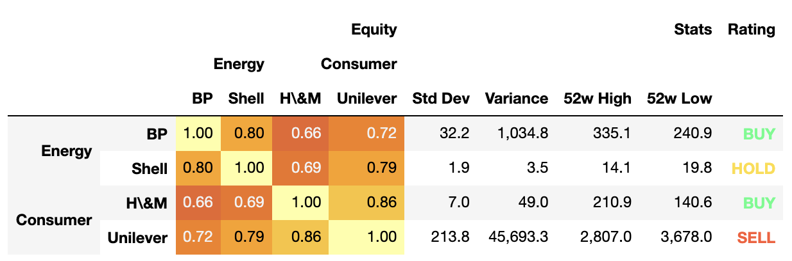

Write Styler to a file, buffer or string in LaTeX format.
New in version 1.3.0.
Parameters
bufstr, path object, file-like object, or None, default None
String, path object (implementing os.PathLike[str]), or file-like
object implementing a string write() function. If None, the result is
returned as a string.
column_formatstr, optional
The LaTeX column specification placed in location:
\begin{tabular}{<column_format>}
Defaults to ‘l’ for index and
non-numeric data columns, and, for numeric data columns,
to ‘r’ by default, or ‘S’ if siunitx is True.
positionstr, optional
The LaTeX positional argument (e.g. ‘h!’) for tables, placed in location:
Set to True to add \toprule, \midrule and \bottomrule from the
{booktabs} LaTeX package.
Defaults to pandas.options.styler.latex.hrules, which is False.
Changed in version 1.4.0.
clinesstr, optional
Use to control adding \cline commands for the index labels separation.
Possible values are:
None: no cline commands are added (default).
“all;data”: a cline is added for every index value extending the
width of the table, including data entries.
“all;index”: as above with lines extending only the width of the
index entries.
“skip-last;data”: a cline is added for each index value except the
last level (which is never sparsified), extending the widtn of the
table.
“skip-last;index”: as above with lines extending only the width of the
index entries.
New in version 1.4.0.
labelstr, optional
The LaTeX label included as: \label{<label>}.
This is used with \ref{<label>} in the main .tex file.
captionstr, tuple, optional
If string, the LaTeX table caption included as: \caption{<caption>}.
If tuple, i.e (“full caption”, “short caption”), the caption included
as: \caption[<caption[1]>]{<caption[0]>}.
sparse_indexbool, optional
Whether to sparsify the display of a hierarchical index. Setting to False
will display each explicit level element in a hierarchical key for each row.
Defaults to pandas.options.styler.sparse.index, which is True.
sparse_columnsbool, optional
Whether to sparsify the display of a hierarchical index. Setting to False
will display each explicit level element in a hierarchical key for each
column. Defaults to pandas.options.styler.sparse.columns, which
is True.
multirow_align{“c”, “t”, “b”, “naive”}, optional
If sparsifying hierarchical MultiIndexes whether to align text centrally,
at the top or bottom using the multirow package. If not given defaults to
pandas.options.styler.latex.multirow_align, which is “c”.
If “naive” is given renders without multirow.
If sparsifying hierarchical MultiIndex columns whether to align text at
the left, centrally, or at the right. If not given defaults to
pandas.options.styler.latex.multicol_align, which is “r”.
If a naive option is given renders without multicol.
Pipe decorators can also be added to non-naive values to draw vertical
rules, e.g. “|r” will draw a rule on the left side of right aligned merged
cells.
Changed in version 1.4.0.
siunitxbool, default False
Set to True to structure LaTeX compatible with the {siunitx} package.
environmentstr, optional
If given, the environment that will replace ‘table’ in \\begin{table}.
If ‘longtable’ is specified then a more suitable template is
rendered. If not given defaults to
pandas.options.styler.latex.environment, which is None.
New in version 1.4.0.
encodingstr, optional
Character encoding setting. Defaults
to pandas.options.styler.render.encoding, which is “utf-8”.
convert_cssbool, default False
Convert simple cell-styles from CSS to LaTeX format. Any CSS not found in
conversion table is dropped. A style can be forced by adding option
–latex. See notes.
Returns
str or None
If buf is None, returns the result as a string. Otherwise returns None.
For the following features we recommend the following LaTeX inclusions:
Feature
Inclusion
sparse columns
none: included within default {tabular} environment
sparse rows
\usepackage{multirow}
hrules
\usepackage{booktabs}
colors
\usepackage[table]{xcolor}
siunitx
\usepackage{siunitx}
bold (with siunitx)
\usepackage{etoolbox}
\robustify\bfseries
\sisetup{detect-all = true} (within {document})
italic (with siunitx)
\usepackage{etoolbox}
\robustify\itshape
\sisetup{detect-all = true} (within {document})
environment
\usepackage{longtable} if arg is “longtable”
| or any other relevant environment package
hyperlinks
\usepackage{hyperref}
Cell Styles
LaTeX styling can only be rendered if the accompanying styling functions have
been constructed with appropriate LaTeX commands. All styling
functionality is built around the concept of a CSS (<attribute>,<value>)
pair (see Table Visualization), and this
should be replaced by a LaTeX
(<command>,<options>) approach. Each cell will be styled individually
using nested LaTeX commands with their accompanied options.
For example the following code will highlight and bold a cell in HTML-CSS:
Internally these structured LaTeX (<command>,<options>) pairs
are translated to the
display_value with the default structure:
\<command><options><display_value>.
Where there are multiple commands the latter is nested recursively, so that
the above example highlighed cell is rendered as
\cellcolor{red}\bfseries4.
Occasionally this format does not suit the applied command, or
combination of LaTeX packages that is in use, so additional flags can be
added to the <options>, within the tuple, to result in different
positions of required braces (the default being the same as --nowrap):
Tuple Format
Output Structure
(<command>,<options>)
\<command><options> <display_value>
(<command>,<options> --nowrap)
\<command><options> <display_value>
(<command>,<options> --rwrap)
\<command><options>{<display_value>}
(<command>,<options> --wrap)
{\<command><options> <display_value>}
(<command>,<options> --lwrap)
{\<command><options>} <display_value>
(<command>,<options> --dwrap)
{\<command><options>}{<display_value>}
For example the textbf command for font-weight
should always be used with –rwrap so ('textbf','--rwrap') will render a
working cell, wrapped with braces, as \textbf{<display_value>}.
Internally Styler uses its table_styles object to parse the
column_format, position, position_float, and label
input arguments. These arguments are added to table styles in the format:
Exception is made for the hrules argument which, in fact, controls all three
commands: toprule, bottomrule and midrule simultaneously. Instead of
setting hrules to True, it is also possible to set each
individual rule definition, by manually setting the table_styles,
for example below we set a regular toprule, set an hline for
bottomrule and exclude the midrule:
If other commands are added to table styles they will be detected, and
positioned immediately above the ‘\begin{tabular}’ command. For example to
add odd and even row coloring, from the {colortbl} package, in format
\rowcolors{1}{pink}{red}, use:
This method can convert a Styler constructured with HTML-CSS to LaTeX using
the following limited conversions.
CSS Attribute
CSS value
LaTeX Command
LaTeX Options
font-weight
bold
bolder
bfseries
bfseries
font-style
italic
oblique
itshape
slshape
background-color
red
#fe01ea
#f0e
rgb(128,255,0)
rgba(128,0,0,0.5)
rgb(25%,255,50%)
cellcolor
{red}–lwrap
[HTML]{FE01EA}–lwrap
[HTML]{FF00EE}–lwrap
[rgb]{0.5,1,0}–lwrap
[rgb]{0.5,0,0}–lwrap
[rgb]{0.25,1,0.5}–lwrap
color
red
#fe01ea
#f0e
rgb(128,255,0)
rgba(128,0,0,0.5)
rgb(25%,255,50%)
color
{red}
[HTML]{FE01EA}
[HTML]{FF00EE}
[rgb]{0.5,1,0}
[rgb]{0.5,0,0}
[rgb]{0.25,1,0.5}
It is also possible to add user-defined LaTeX only styles to a HTML-CSS Styler
using the --latex flag, and to add LaTeX parsing options that the
converter will detect within a CSS-comment.
Note that one of the string entries of the index and column headers is “H&M”.
Without applying the escape=”latex” option to the format_index method the
resultant LaTeX will fail to render, and the error returned is quite
difficult to debug. Using the appropriate escape the “&” is converted to “\&”.
Thirdly we will apply some (CSS-HTML) styles to our object. We will use a
builtin method and also define our own method to highlight the stock
recommendation:
All the above styles will work with HTML (see below) and LaTeX upon conversion:

However, we finally want to add one LaTeX only style
(from the {graphicx} package), that is not easy to convert from CSS and
pandas does not support it. Notice the –latex flag used here,
as well as –rwrap to ensure this is formatted correctly and
not ignored upon conversion.